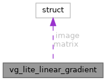

|
TermostatBox3
|

Javni atributi | |
| vg_lite_uint32_t | colors [VLC_MAX_GRADIENT_STOPS] |
| vg_lite_uint32_t | count |
| vg_lite_uint32_t | stops [VLC_MAX_GRADIENT_STOPS] |
| vg_lite_matrix_t | matrix |
| vg_lite_buffer_t | image |
| vg_lite_uint32_t vg_lite_linear_gradient::count |
Colors for stops.
| vg_lite_buffer_t vg_lite_linear_gradient::image |
The matrix to transform the gradient.
| vg_lite_matrix_t vg_lite_linear_gradient::matrix |
Color stops, value from 0 to 255.
| vg_lite_uint32_t vg_lite_linear_gradient::stops[VLC_MAX_GRADIENT_STOPS] |
Count of colors, up to 16.